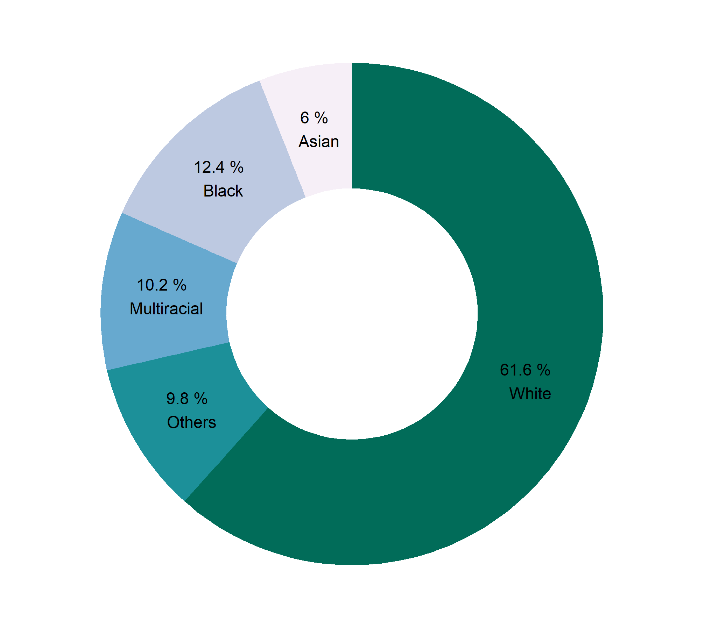

Statistics: Preliminaries
Abdullah Al Mahmud
What is Statistics
Statistics has three meanings:
- Data (table or a series of values)
| Expt | Run | Speed | |
|---|---|---|---|
| 001 | 1 | 1 | 850 |
| 002 | 1 | 2 | 740 |
| 003 | 1 | 3 | 900 |
| 004 | 1 | 4 | 1070 |
| 005 | 1 | 5 | 930 |
| 006 | 1 | 6 | 850 |
- Plural of statistic (formula)
- Method of analyzing and predicting data
Data
Data: Information expressed in numbers (usually)
10, 23, 6, 16, 19, 25, 14, 12, 22, 28, 4, 21, 2, 7, 17
Types of Data
- Primary Data: Collected directly
- Secondary Data: Fetched from someone else
- A researcher collects rainfall data everyday for predicting future rainfall.
- An investigator collects family and geographical information of criminals.
- WHO tracks information of Covid-19 patients.
- An independent researcher uses information collected by WHO.
- A teachers borrowes marks graded by another teacher.
Unorganized and Organized Data
40, 39, 31, 38, 40, 40, 34, 39, 31, 38, 37, 30, 31, 37, 35, 37, 36, 35, 39, 39
| x | Freq |
|---|---|
| 30 | 1 |
| 31 | 3 |
| 34 | 1 |
| 35 | 2 |
| 36 | 1 |
| 37 | 3 |
| 38 | 2 |
| 39 | 4 |
| 40 | 3 |
Frequency Distribution
X = 11, 15, 16, 18, 20, 22, 25
| Class | Tally | Frequency |
|---|---|---|
| 11-15 | || | 2 |
| 16-20 | ||| | 3 |
| 21-25 | || | 2 |
Construction
Range = (Highest value - Lowest value) + 1
X = 11, 15, 16, 18, 20, 22, 25
Range of X = ?
Class Interval
\((11-15) \rightarrow (15-11+1)= 5\), not 4
- \((20-24) \rightarrow ?\)
- Number of class = \(\frac{Range}{Interval}\)
- Interval = ?
Example of Frequency Distribution
X = 32, 20, 34, 17, 15, 40, 5, 18, 44, 28, 49, 27, 8, 29, 45, 39, 3, 35, 46, 37, 50, 36, 2, 4, 7, 24, 42, 31, 19, 14
Distribution
Range = ?
Let, class interval = 5
Number of class = ?
- Now, construct
Interpretation
| Class | Frequency |
|---|---|
| 11-15 | 2 |
| 16-20 | 5 |
| 21-25 | 9 |
| 26-30 | 10 |
| 31-35 | 3 |
- What have you known from this frequency distribution?
- What is the benefit of organizing?
Diagrams
Histogram
Make sure class intervals are continuous
Continuous or exclusive: (10-15); (15-20); (20-25) Discontinuous/Inclusive: (10-14); (15-19)
- If discontinuous \(\rightarrow\) convert
- Add 0.5 to upper limit and subtract 0.5 from lower limit
Conversion
| Continuous CI | Discontinuous CI |
|---|---|
| 10-14 | 9.5-14.5 |
| 15-19 | 14.5-19.5 |
| 20-24 | 19.5-24.5 |
| 25-29 | 24.5-29.5 |
Histogram Example
| Interval | Frequency |
|---|---|
| 20-30 | 5 |
| 30-40 | 12 |
| 40-50 | 30 |
| 50-60 | 40 |
| 60-70 | 20 |
| 70-80 | 13 |
| 80-90 | 3 |
| 90-100 | 2 |
 Write its interpretation in 3-5 sentences.
Write its interpretation in 3-5 sentences.
Make a Histogram
| Class Interval | Continuous CI | Frequency |
|---|---|---|
| 11-20 | 10 | |
| 21-30 | 20 | |
| 31-40 | 35 | |
| 41-50 | 20 | |
| 51-60 | 15 | |
| 61-70 | 10 | |
| 71-80 | 8 | |
| 81-90 | 5 | |
| 91-100 | 3 |
Histogram
Pie Chart
Construction of Pie Chart
Fruit production in Bangladesh (made-up data)
| Fruit | Production (f) | Angle |
|---|---|---|
| Mango | 35 | |
| Litchi | 20 | |
| Guava | 40 | |
| Banana | 25 |
Find angles and plot them on the circle
\(Angle = \frac{f_i}{\Sigma f_i}\times 360\)
When to Use Pie Chart
- Pie: For data that are part of a whole
- For all categorical data
| Race | Percentage |
|---|---|
| White | 61.6 |
| Black | 12.4 |
| Multiracial | 10.2 |
| Asian | 6.0 |
| Others | 9.8 |
| Year | Population |
|---|---|
| 1901 | 87 |
| 1991 | 106 |
| 2001 | 124 |
| 2011 | 142 |
Pie vs Bar Chart
Pie Chart
{kind=link}
Bar Chart
{kind=link}
Donut Chart

Bar Chart vs Histogram
Quantitative Data \(\to\) Histogram
## [1] 85 79 70 6 32 8 17 93Qualitative Data \(\to\) Bar Diagram / Pie Chart
| Religion | Percentage |
|---|---|
| Islam | 90.4 |
| Hinduism | 8.5 |
| Buddhism | 0.6 |
| Christianity | 0.4 |
| Others | 0.1 |